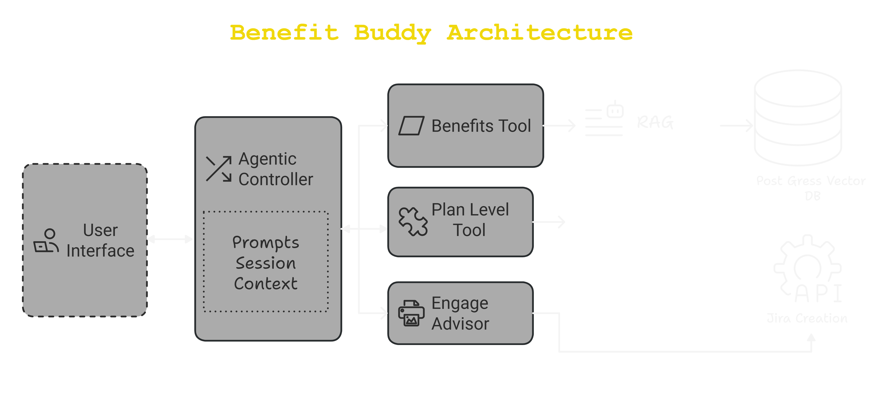

Agentic AI Based ChatBot for Healthcare Account Plan Analysis
Introduction
One of my most impactful projects was developing an Agentic Bot Framework that
streamlined healthcare account plan data analysis using LlamaIndex. The goal was to create
an intelligent system comprised of specialized agents to analyze Elevance Health data
through structured workflows, enabling comprehensive healthcare data analysis and natural
language query processing.
Problem Statement
Healthcare benefit plans contain vast amounts of fragmented data, making manual validation and
information retrieval time-consuming and error-prone. During the annual renewal of commercial
health plans, EBAs and Sales Agents must specify benefit details and cost shares across multiple
network tiers. This often involves searching historical data and navigating large
documents—slowing down renewals and impacting efficiency.
Solution: The Agentic AI Framework
To solve this, we developed an LLM-powered conversational AI assistant as part
of the Automated Benefit Integration (ABI) system. This intelligent
agent-driven framework:
Enhances efficiency by simplifying access to benefit plan information.
Reduces errors with real-time data validation.
Expedites renewals by minimizing manual research.
Improves collaboration through Jira integration for task management.
Elevates customer experience by accelerating response times and service
quality.
By leveraging Retrieval-Augmented Generation (RAG) and structured AI workflows,
we transformed benefit administration—ensuring data accuracy, optimizing workflows, and
empowering teams with intelligent insights.
Architecture Overview:

Architecture Overview
Key Components & Their Roles
User Interface (UI): Front-end for user interactions.
Agentic Controller: Orchestrates queries, maintains session context, and
assigns tasks to the right tools.
Benefits Tool: Fetches benefit-related data using RAG and LLMs (e.g.,
GPT-4).
Statistics Tool: Retrieves structured data from Oracle and formats it using
LLM.
Costshare Tool: Handles cost share retrieval and formatting via LLM and
output parsers.
Databases: Oracle DB (structured benefit data) + Post-Gross Vector DB (for
similarity searches).
Jira Integration: Automates issue resolution and escalations through Engage
Advisor.
How It Works
Example Query: "What’s the cost share for air ambulance?"
The Agentic Controller checks session context and routes the request.
The Benefits Tool retrieves data via RAG and formats it
using an LLM.
If the user is unsatisfied, Jira Integration creates a ticket for SMEs.
Session data is stored in Redis for continuity in user interactions.
AI-Driven Impact & Challenges
Pros:
Understands natural language efficiently.
Fast responses—leverages caching for speed.
Handles out-of-scope queries intelligently.
Challenges:
Inconsistent LLM Responses – AI can generate varying answers for identical
queries.
Example Issue:
Response 1: "Air Ambulance is covered in most plans."
Response 2: "Air Ambulance is NOT covered in a few plans."
The ambiguity in “covered” vs. “not covered” needed structured validation.
Example Use Case
Scenario: User Query - "What’s the coverage for air ambulance?"
User logs in: The system assigns a unique session ID.
User asks: "What’s the cost share for air ambulance?"
Agentic Controller:
Checks the Session Context to determine intent.
Routes the query to the appropriate tool based on the request type.
Benefits Tool:
Uses Retrieval-Augmented Generation (RAG) to fetch relevant data
from the Vector DB.
Calls the LLM (e.g., GPT-4) to generate a response in natural
language.
Returns a response, e.g., "Air Ambulance is covered in most of the plans."
User not satisfied with the response:
The system prompts for clarification or additional details.
If still unresolved, the user can submit a dissatisfaction report.
Escalation Handling:
The Jira Creation Tool compiles data into a formatted document.
For complex issues, the Engage Advisor creates a ticket via the
JIRA API to involve SMEs.
AI Agentic Framework & Session Management
The system does not retain previous chat history for security and efficiency. To maintain context
within a session, all interactions are stored in a structured format.
Session Data Structure:
{
userQuery: "What’s the cost share for air ambulance?"
sessionId: "16-digit UUID assigned per session",
groupId: "Metadata identifier - group",
benefitName: "Benefit extracted from user query",
benefitOption: "Cost share extracted from user query",
planName: "Plan names extracted from user query"
}
Metadata Validation:
The system extracts relevant entities (groupId, benefitOption,
etc.).
If missing data (e.g., group ID), the system prompts the user for additional input.
The Benefits Tool performs a similarity search using LLM and BM25 encoder
to rank multiple options.
If multiple benefit names match, the user is prompted to select the correct one.
Data Fetching Mechanism
If metadata is complete, data is fetched from the PostgreSQL Vector DB
using similarity search.
To avoid slow responses with large datasets, an alternative Oracle tabular
database is used.
Data is preprocessed and formatted before being sent to LLM for insights.
Handling Plan-Level Queries
If a user asks for plan-level information:
The system retrieves group IDs and plan details from the Oracle
DB.
The response is formatted and passed through an output parser (e.g.,
Pydantic Output Parsers).
Handling User Dissatisfaction
If the user is dissatisfied with the response:
A "thumbs down" option allows them to raise a dissatisfaction report.
If approved, the Engage Advisor creates a JIRA ticket for SME intervention.
Final Thoughts
"This project demonstrated my ability to integrate AI, data engineering, and automation to
solve real-world healthcare challenges. It wasn’t just about building a chatbot—it was about
designing an AI-driven ecosystem that empowers users to navigate complex
data effortlessly while ensuring operational efficiency and accuracy."